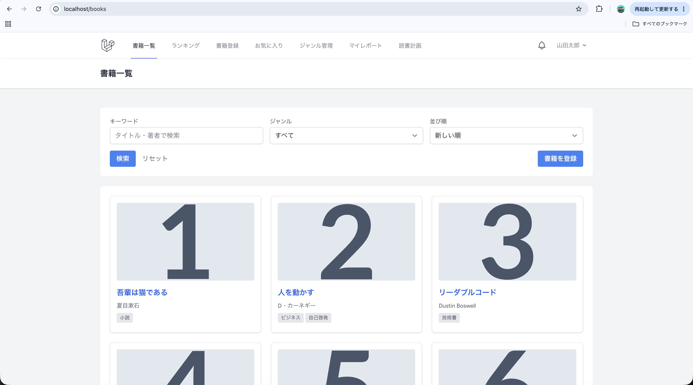
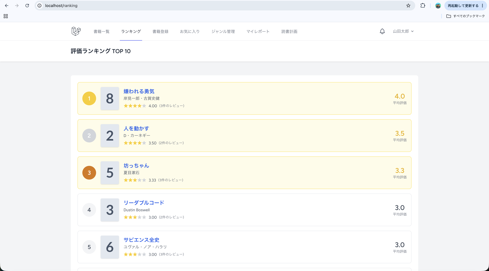

book_shelf
本のレビューを投稿し、コメント・いいねで交流できるWebアプリ
- 機能
- レビュー投稿 / コメント / いいね / 一覧・集計表示
- 技術
- PHP、Laravel、MySQL、phpMyAdmin、Docker
- 担当
- バックエンドの実装
resources(フロントエンド)は完成品として提供していただきました。
工夫・苦労した点
今回初めて要件定義書をもとにしたシステム設計に挑戦しましたが、設計の難しさを実感するとともに、開発の進め方を見直すきっかけとなりました。当初は指定された機能を実装することに意識が向きがちで、設計段階で各機能の依存関係や、どの順序でコーディングを進めるべきかを十分に整理できていませんでした。そのため、実装を進める中で作業の順序に迷うことがあり、事前に開発手順を明確にしておくことの重要性を学びました。
また、設計を進める中で「クライアントは何に困っていて、この機能でどのような課題を解決したいのか」という本質的なニーズを理解することの大切さにも気づきました。そこで、画面や機能を作る前に、利用者や利用シーン、権限などを整理し、実際の運用で起こり得る重複登録や誤操作なども想定しながら、データベースの制約やエラーハンドリングについて検討しました。
この経験を通じて、要件を満たすだけでなく、実装の順序や機能間の関係性まで考慮して設計することの重要性を学びました。今後は、コーディングを始める前に開発手順や優先順位を明確にし、課題を一つずつ整理しながら、効率的で保守性の高い開発を目指していきます。

